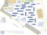

De: La Frikipedia, la enciclopedia extremadamente seria.
De: La Frikipedia, la enciclopedia extremadamente seria. De: La Frikipedia, la enciclopedia extremadamente seria.
| De la serie Países del planeta tierra: | |||||
| Campo de Concentraciòn Humano Plantel Azcapotzalco | |||||
|---|---|---|---|---|---|
| |||||
| Lema: Por el chupe hablarán los ebrios | |||||
| Himno: goya goya, cachun cachun , ra ra, cachun chachun, ra ra, goya goya, universidad
| |||||
| 
| |||||
| Capital | Dirección Escolar | ||||
| Mayor ciudad | cuceb | ||||
| Lenguas oficiales | Hoigan, Pandrofresa, PseudoJipi | ||||
| Gobierno | Un Director intenta dar órdenes que nadie acata | ||||
| Director | [Sandra G. Aguilar Fonseca] | ||||
| Área | [Altos del Tibet Mexicano, por el Páramo del Chayo] | ||||
| Población | 15,000 pseudoestudiantes más pseudomaestros mas 30,000 turistas | ||||
| Moneda | el Varo Mexicano | ||||
| Zona horaria | Todas | ||||
| Dominio Internet | .unam.mx | ||||
| Código telefónico | 060
| ||||
| Tiene 1 día de clases y los demás de perreo; las minorías han sido expulsadas. | |||||
Aquellos eran días en que los pseudoestudiantes buscaban en el Tibet Mexicano un sitio donde establecerse, cuando un pseudoprofesor enviado directo de los 5 craneos maestros exclamó:
Si hemos de establesernos, hagamoslo donde el porro de yerba se dé al pormayor y el rusas No tengan fin, Se cree que el maestro de taller y redacción Tata ( nombre clave entre la comunidad )Fue el enviado milenario de los 5 craneos maestros e incluso se dice que el fue alumno de ellos.
Fue en aquel momento en el que ese pendejo, de nombre Benito Cameloid Iota encontró un valle con las cosas que prometió... y más aborto de la cráneos maestros de Mëxico fundaron en el valle perdido de Azcapotzalco lo que serie en ese entonces y hasta ahora el autentico modelo de un CCH y fue asi como nació el CCH Azcapotzalco
Años despues, cuando la Edad de Lata llegó a esa tierra, se dió en el 1999 d.CN. la mayor huelga.
A inicios de ese año las putas del sitio no recibieron un acostumbrado pago por 20 años, realizándose una huelga que afectó a todo pseudouniversitario con la falta de las putas que tanto nutren a cualquiera.
En Febrero del año siguiente llegaron los truños de donde menos se lo esperaban las insurrectas: las legiones de desesperados idiotas y marginados sociales se levantaron en pollas y follaron como el Niño Loco Aleman siempre quiso. Sin embargo, no fue hasta la venida de IP anónima que calmó los animos.
No fue sino hasta los últimos días de Octubre del 2008 en que la historia mundial le haría un hueco. La Guerra de la basura estaba en todo su apogeo despues le la ofensiva del Zócalo y el palacio de las putas los Deportes en México. Hubo dos tomas del pequeño pero orgulloso país:
Generalmente se sirve comida generalmente horrenda en las cafeterias ademas de que esta muy cara y sumamente insipida que ni el perro de tu hermana se comeria, pero hay idiotas que se largan al extremo sur a comprar comida mejor o a los graneros de la periferia por viandas menos asquerosas.Y los menos recuerdan esos años de puqueña pubertad trayendose comida de su casa, tambien ay quienes gustan de comidas exoticas como las tortas del mandril, que aunque se ven tana asquerosas como la demas comida sabe mejor.
Justo a la entrada, en Edificio E (La segunda mayor ciudad pero la más productiva) venden comida, LCD, Cigarros adulterados con acerrin de todos colores y sabores, a cambio de buen porno y revistas donde aparezca un equipo de furbo muy malo. Sin embargo, no solo compran porno, sino piratería de lo más chafa.
Cerca de Edificio Eme se instalan las putas más rechazadas, frecuentadas solo por los elfos . Por desgracia, tambien se juntan los porros de otra variante menos agradable que los de yerba (Véase más abajo, como unas tres lineas).
Al extremo sur se encuentra el "Santuario Friki", un lugar donde los frikis van a "hacer tarea", cuando en realidad se van a ver que hay en Jai Faib o Netloj. De vez en cuando quienes huyen de algo cono una invasión se refugian para ver porno, pese a ser la base de operaciones de El_Samo.
En el extremo norte de la ciudad cerca del edificio U se encuentra la bibloteca, que sirve para cualquier cosa menos para estudiar.
En el pasillo que conecta el lado este con el oeste, se encuentra el pequeño chopo, llamado asi por su semejanza en cuanto a la venta de cualquier basura, llamese pulceras ñoñas, dulces adulterados y ropa vieja, sin embargo la venta de dulces es muy prospera, que debido a los precios bajos es parte primordial del ptb de la ciudad.
En l edificio Q ubicado en el centro de la ciudad y por lo tanto paso obligado para todo ceceachero, se encuentra la jotibanca, paraiso gay donde se juntan los jotos para hacer joterias como bailr, criticar gente y ver como su divertida y sexualmente activa vida pasa recibiendo el sol.
Otro edificio famoso es la folleteria ubicada en el E, este lugar turistico se reconoce por largas filas en la que se llega a esperar mas de 2 semestres, nadie sabe para que es al fila pero todos se forman, muchos han dicho que es para "follar" de ahi el nombre de folleteria, otros dicen que venden folletos y libros, la verdad nunca sera conocida.
Esta raza, conocida como porros (No confundir por los de yerba), cometen tales atrocidades y más, entre ellas:
Su mayor crimen fue destruir material frikipedico irremplazable, alegando que Chuck Norris era solo un actor hijoputa. Naturalmente el ya trabaja en una nueva patada que eliminará a todos los porros de la fgaz de la tierra e impedir su sueño de dominar al mundo.
ademas de los porros hay varias razas como:
Posteriormente a las fiestas de anoaño nuevo la cruda agarró a todos desprevenidos. La razón es complicada, pero se resume en 4 palabrejas: CRISIS POR GUERRA CIVIL
Resulta que en los días finales del 2008 las cosas no marcharon tan bien que digamos. La gota que colmó el vaso fue una supuesta remodelación de fronteras (Versión oficial), siendo una venta de territorio a México del todo ilegal. Ello causó que todos los centros monetarios del país, incluyendo el Mandril, fueron clausurados en beneficio de los bancos de las Cafeterías. La cosa no estuvo mejor para una invasión de parte de las huestes charras, mismas que vencieron al país de forma permanente.
Las antaño crueles milicias, al ser aplastadas sin piedad, permitieron el regreso de los porros volvieran con renovados brios (Y vaya que frios) a destruir muchas ciudades y reconstuirlas a su gusto. Naturalmente odian al Mandril y he de ahí su clausura total. Monetariamente el patrón era:
Ahora, toda la moneda fue borrada, subiendo el pan arabe a la cima. Vean:
Militarmente el jebi ocupó el lugar del porro, pero éste último regresó, siendo el jebi un esclavo (Para más léase un libro de Tolkien, gilipollas. La muerte ronda por doquiera que se le vea y es muy fea.
Económicamente todo ha hido muy mal antes de la Peje el causante de este mal.
Por su lado, los emos se seguían cortando las vernas con ojas de lechuga pero eran perseguidos a muerte por jinetes y porros.
Los demás, bien, gracias, en sus vidas apestosas haciendo creveza y tequila de 5¢ en bares de lo más chafas(Dicese de los mas "nice" para ellos).
Tras años de violenta gestión y el renacer de los porros (Causando el exterminio jebi (Léase Holocausto Jebi Mexicano) y el renacer fresa), un motín le costó la vida al Director Andres (El 19 en sucesión directa), lo que llevó al periodo conocido como El Fonsecado, ya que la primera mujer no homosexual del país ganó por aplastante mayoría de votos, al comprar miles de tortas del Mandril para los votantes... hasta que las declaró ilegales tanto como comestible como unidad monetaria. Las consecuencias directas fueron una recesión económica global (El llamado Efecto Powers-House), la Revuelta de las Putas (Y la destrucción del Revolcadero) y la conclusión del Neo Colisseum iniciada por su predecesor.
Mientras los últimos jebis se fueron a otros lugares, los porros han tomado de nuevo el control y ahora extorsionan más que nunca.
La política exterior de la tal Sandra Aguilar Fonseca ha sido más bien pacifista-conciliadora, mediando en las guerras constantes entre jebis y las demás naciones de la UNAM... aplastandolas cruelmente a las orgullosas tropas jebis por su cuenta, lo que llevaría a la Guerra de Pitbull
Por su lado, la economía cch'ra se desplomó al saberse de la definitiva exclusión del Mandril de los planes a futuro. La cosa monetaria apela ya al varo mexicano como jnueva moneda de cambio.
Una epoca de Paz gobernó por momentos a los habitantes de aquella ciudad llamada CCH Azcapotzalco, pero en la zona conurbada, levantaron un imperio con aproximadamente 10 castillos, una pequeña ciudad llamada Territorio Limosneado Antorchista, habitantes: 10 personas aproximadamente, y sus gobernadornadores Chuck Norris y Diox
Todo permanece sin sentido. Los jebis, los frikis y demas tribu pajera como los skates (incluyendo los suaj), permanecen en una guerra constante de saber quien es mejor.
Los baños son mas sucios que la concha de tu hermana despues de una gangbang, y las nuevas generaciones cada día son mas aburridas.
El Mandril sigue vendiendo tortas y armas nucleares a Corea del Norte.
| |
|---|
| Bahamas | Barbados | Dominica | Granada | Guyana | Haití | San Cristóbal y ¿Nieves? | San Vicente y las Granadinas | Santa Lucía | Trinidad y Tobago | Uruguay | Venezuela |
Autor(es):